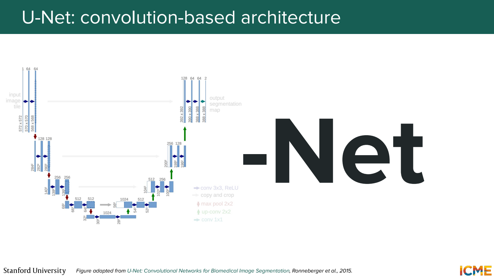
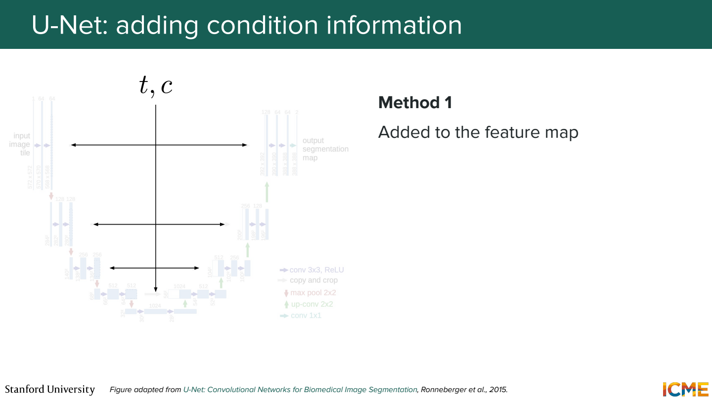
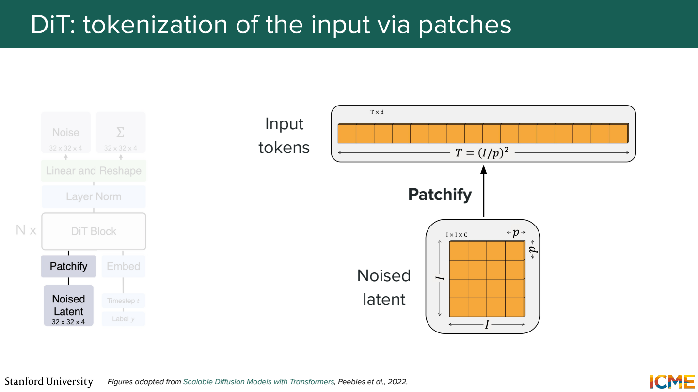
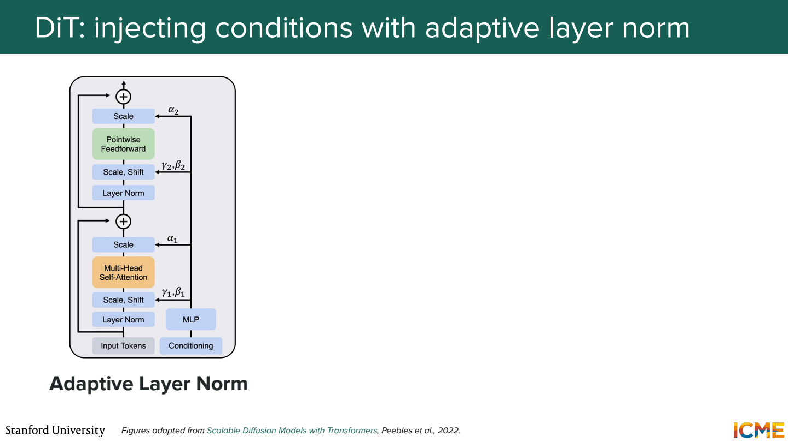
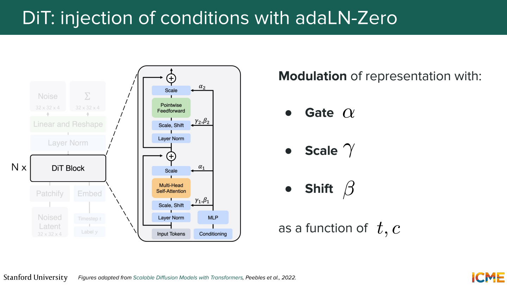
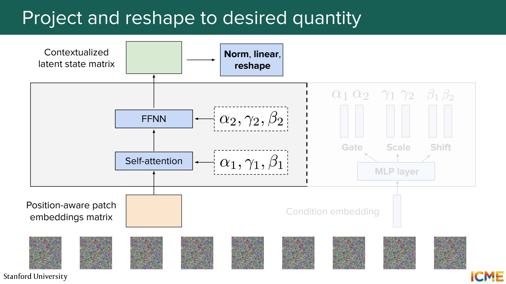
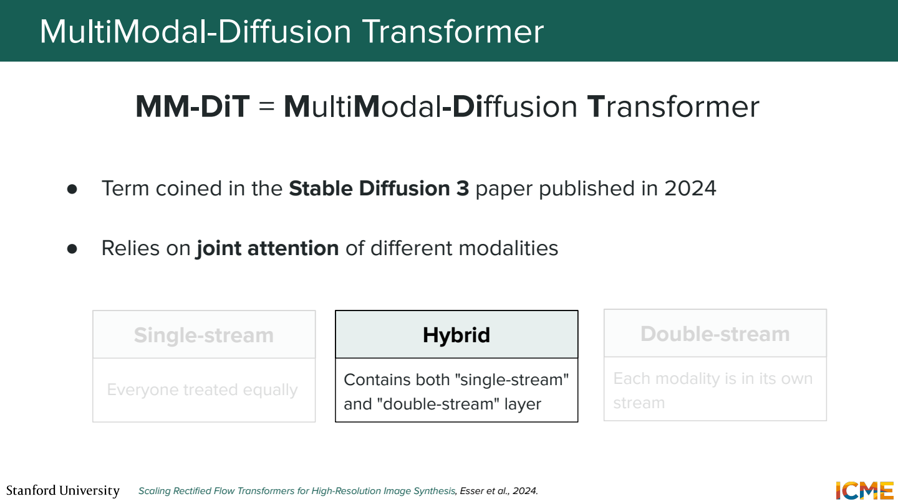
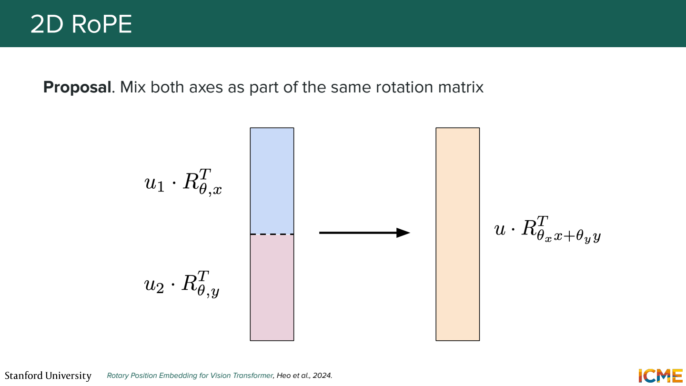

이 노트의 목차
5단원 노이즈를 예측하는 모델 안쪽
Diffusion은 학습과 생성의 방식이고, U-Net이나 Transformer는 그 안에서 쓰는 모델 구조. 어떤 구조를 쓰든 noisy input과 시간·조건을 받아 필요한 값을 예측해야 함.
U-Net은 줄였다가 다시 키움

Downsampling으로 공간 크기를 줄이면서 넓은 영역의 정보를 모음. Upsampling으로 다시 크기를 키워 위치별 출력을 만듦. 같은 해상도의 앞쪽 feature를 뒤쪽으로 전달하는 skip connection도 사용.
64×64 → 32×32 → 16×16
↓
64×64 ← 32×32 ← 16×16
작은 feature map은 큰 구조를 보기 쉽지만 세부 위치 정보가 줄어들 수 있음. 앞쪽의 세부 정보를 연결해서 복원에 활용하는 이유. 여기서 skip은 feature를 이어 붙이는 등 구현이 다양해서 residual의 덧셈과 항상 같지는 않음.
시간과 조건을 전달

같은 형태의 입력이라도 생성 초반인지 마지막인지에 따라 필요한 예측이 달라짐. t를 embedding으로 바꿔 각 block의 feature에 반영. Class embedding이나 텍스트 조건도 더하거나 cross-attention 등으로 연결할 수 있음.
강아지라는 조건을 입력 맨 앞에 한 번 넣는 것만이 방법은 아님.
여러 층에서 조건을 다시 사용하게 만드는 구성이 가능.
DiT는 latent를 patch token으로 처리

DiT는 Diffusion Transformer. Noisy latent를 작은 patch로 나눠 Transformer 입력으로 사용.
계산용으로 16×16×4 latent를 2×2 patch로 나눈다고 가정.
patch 수: 8×8 = 64개
patch 하나의 숫자: 2×2×4 = 16개
16개 숫자 → 선형 변환 → 예를 들어 128차원 token
모델 안에서는 [64, 128] 모양의 token 배열로 처리 가능.
128은 예제에서 정한 hidden dimension. Patch의 숫자 개수와 같을 필요는 없음.
adaLN은 조건에 따라 정규화 뒤 값을 조절

LayerNorm 뒤에 적용하는 scale과 shift를 조건 embedding에서 계산.
조건 c와 시간 t → 작은 네트워크 → γ, β
출력 = γ ⊙ LayerNorm(x) + β
구현에서는 scale을 1+γ로 쓰기도 함.
고정된 γ, β 대신 현재 시간과 조건에 맞는 값을 쓰는 점이 핵심.
정규화가 조건을 이해하는 건가?
정규화 계산 자체가 텍스트를 읽는 건 아님. 조건을 읽은 작은 네트워크가 feature를 얼마나 키우고 이동할지 정해주는 구조.

adaLN-Zero에서는 residual branch의 결과에 곱할 gate도 사용.
초기에 gate가 0이면 x + 0×F(x)이므로 block이 입력을 거의 그대로 통과시킴.
학습하면서 필요한 변화를 열어가는 형태.
Transformer 출력은 다시 공간 배열로

앞의 예제에서 token 64개를 처리했다면 각 token을 patch 모양의 출력으로 변환.
이들을 원래 위치로 합쳐 16×16×4 같은 예측 배열을 얻음.
noisy latent → patch tokens → Transformer
→ patch별 예측 → 공간 배열 → sampler update
출력이 바로 완성된 RGB 이미지인 것은 아님. Noise나 velocity 등 학습 목표에 맞는 값을 내고, sampler가 다음 latent를 계산. 여러 step 이후 decoder가 최종 이미지를 만듦.
텍스트와 이미지를 함께 처리

MM-DiT 계열은 이미지와 텍스트의 표현이 joint attention으로 정보를 주고받게 함.
예를 들어 빨간 컵의 텍스트 token과 컵이 있을 법한 이미지 patch가 서로 참조.
텍스트를 단순한 class 번호 하나로 압축하는 것보다 풍부한 조건을 다룰 수 있음.
Single-stream은 두 modality를 한 stream에서 처리. Double-stream은 modality별 변환을 두면서 attention으로 연결하는 형태. 두 종류의 block을 섞는 hybrid 구성도 있음. 이름만 보고 모든 층의 가중치 공유 방식이 같다고 가정하지 않기.
이미지 위치는 가로와 세로가 있음

텍스트는 주로 1차원 순서지만 이미지 patch에는 (행, 열) 좌표가 있음.
2D RoPE는 두 축의 위치를 Q와 K의 회전에 반영.
축별로 차원을 나누는 방법이나, 회전에 두 좌표를 함께 반영하는 방법 등이 있음.
(2,3)과 (2,4)는 가로 이웃, (2,3)과 (3,3)은 세로 이웃.
단순히 펼친 배열의 index 차이만으로는 이 구분이 직접 드러나지 않음.
Patch 위치 관계를 attention에서 활용하도록 넣는 장치.